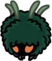

Jardins de la Reine
Une région luxuriante aux portes ornées, offrant aux visiteurs épines et plateformes périlleuses. Ils se situent dans l'ouest d'Hallownest.
Carte
Lore
Les Jardins De La Reine faisaient autrefois partie du territoire d'Unn et de La Tribu des Moussues. Puis, ils furent un jour annexés par la Dame Blanche qui en fit un lieu de retraite à l'abri des dangers extérieurs. Après que la Dame Blanche se soit retirée dans sa chambre et que L'Infection fasse son retour, les Jardins sont devenus une jungle sauvage, envahie par la végétation et les créatures mortelles. Quand les Mantes Traîtres furent exilées de leur village dans la Caverne Nocive, elles s’installèrent dans les Jardins De La Reine. Elles estiment aujourd'hui que les Jardins sont leur territoire'Unn.
Connexions
Les Jardins de la Reine sont reliés à ces zones :
Ennemis
-
Duranda

Une simple créature volante. Son corps est protégé par une coquille épineuse. Ces créatures ignorent les passants, car elles se croient totalement protégées. Attaquez son visage et apprenez-leur qu'elles ne sont pas à l'abri de tout.
-
Loodle
Une créature qui vie dans la nature du côté des Jardins de la Reine. Elle n'est pas agressive mais la manière bizarre qu'elle a de rebondir de partout peut s'avérer dangereux. Il semblerait que leur énergie soit sans limites ! Est-ce que ces créatures s’arrêtent de sauter pour dormir, ou manger ou même aimer.
-
Mante Petra

Une créature qui rôde dans les buissons. Attaque à distance en faisant tournoyer des faux de vent dans les airs. Elles vous attaquerons à distance sans relâche. Approchez vous d'elles et attaquez rapidement. Leur corps est fragile et peut être facilement transpercé avec la pointe de votre aiguillon.
-
Mante Traître

Une créature appartenant autrefois à la tribu des mantes religieuses. Il a été chassé et rendu fou par l'infection. Faire ou ne pas faire parti d'un tribu. Je ne comprends pas très bien ce que ça change ou comment ça fonctionne. Je ne fais moi-même partie d'aucune tribu !
-
Vagabond Moussu
Un moussue paresseux et corpulent. Facilement influencé par d'autres créatures. Lent, gros et facile à tuer. Ce sont là les points communs de ceux qui oublient leur vocation et abandonnent leur devoir.
-
Carcasse Épineuse
Une créature recouverte par la végétation. Attaque en projetant des épines pointues de son corps. Les épines que tirent ces créatures sont légèrement empoisonnées. Ne vous en servez pas pour nettoyer vos dents après avoir mangé.
-
Mangesot
Plante carnivore. Ferme soudainement sa mâchoire lorsqu'une créature s'approche de trop près. Il faudrait vraiment être un idiot pour se faire piéger par une plante.
-
Mouche Masquée
Une créature volante inoffensive. Préfère les environnements calmes et se déplace habituellement en groupe. Ces créatures restent toujours sur leur garde et quand l'une d'elles s'éloigne trop loin, le reste du groupe ira la rejoindre. Je me demande ce que l'on ressent quand on est protégépar tous les membres de son groupe.
-
Rampant Moussu
Une faible créature ailée qui se recouvre de feuilles pour paraître plus large.Elle se cache dans les broussailles. Autrefois, je pensais que ces créatures n'étaient que de simples plantes. Quand j'ai appris qu'elles étaient des organismes vivants, je me suis mis à les tuer dès que j'en trouvais. C'est la loi de la chasse.
-
Mouche moussue
Une faible créature ailée qui se recouvre de feuilles pour paraître plus large. Elle se cache dans les broussailles et fuit les prédateurs qui s'approchent trop près. Ces créatures passent toute leur vie à se cacher ou à fuir ? Cela est tellement triste. Ou bien, peut-être qu'elles aiment ce genre de vie et qu'elles ont choisi elles-mêmes de vivre ainsi. Je pense que ce serai une chose étrange, mais pas impossible.
-
Aluba
Une créature volante passive. Elle vit tout près des eaux acides. Ces créatures vivent une vie dangereuse. Si l'une d'elles venait à s'approcher du sol...
Boss de la Zone
Seigneur Traître
Le Seigneur Traître fut avec ses sœurs l'un des chefs de la tribu des Mantes, mais beaucoup plus hostile qu'elles envers le royaume d'Hallownest. Il reniait également la relation que sa fille entretenait avec l'Endeuillée Grise. Il fut chassé du village des Mantes avec ses fidèles guerriers lorsqu'ils choisirent de succomber à l'Infection pour devenir plus forts. Le seigneur en exil et son groupe s'installèrent dans les jardins abandonnés de la Reine. Ils tentèrent de chasser la Dame Blanche mais furent repousser par la chevalière Dryya qui la protégeait. Malgré cet échec, les Mantes exilées restèrent dans les jardins, mais leurs esprits furent réduits à l'état de simples créatures violentes et territoriales. La tombe de la fille du Seigneur Traître se trouve également dans les Jardins de la Reine, dans une grotte étouffée par les vignes au dessus de la station de Coléoptère
Marmu

Marmu est l'une des Guerrière des Rêves. Elle était la protectrice innocente mais forte des Jardins de la Reine. La Reine lui a promit de lui apprendre à voler à son retour de sa retraite verdoyante. Marmu est décédée avant ce jour et un totem en sa mémoire a été placé sur sa tombe dans la partie plus sauvage des jardins.
Évènements
- Obtention d'un Fragment Blanc de l'Âme Royale
- Obtention de ma Clé de l'Amour
- Station Coléoptère : Station des Jardins de la Reine
- Rencontre de la Dame Blanche
- Rencontre de Cloth